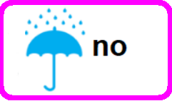
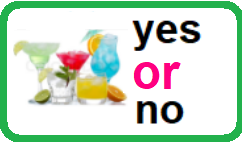
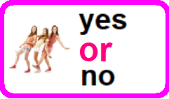
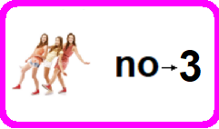
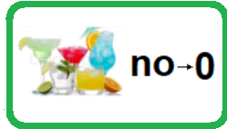
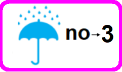
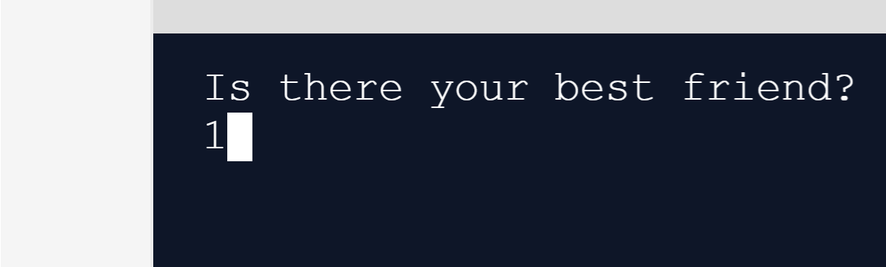

Hopefully, it is the first easily understandable book on Artificial Intelligence (AI) for girls and boys age 8+. Also, the best entry point for anyone who wants to start understanding of AI. By the way, we practice redundancy throughout this book, using very simple words and explaining the same things several times. 

Probably, we are going to a world where people will have an augmented minds. A person will have their human mind augmented with artificial mind -- in other words, augmented with machine mind. For now, in a way, we have already had sort of augmented minds. Since we can resort to the help of machines while thinking. For example, we can already augmente our Minds with additional possibilities while, for example, doing calculations by using calculators in our smartphones, tablets or laptops. Calculators were the first versions of Artificial Minds. But people wanted more. So people now are able to build Artificial Minds that may be self-learning. For now we can already create the Artificial Minds which literally can on its own learn from facts of life and may be becoming better throughout this learning process without our participation. Only on their own. So only Artificial Mind that can learn on its own is called the AI. Likely, in the future, we will not even need to type something on the keyboard — for example, to type numbers for doing calculations — since it will be enough for us to just think of it. 
So within just minutes you will become able to create your first Artificial Neural Network that works. Imagine that you got 3 friends and you want to give 2 oranges to each friend. How many oranges do you need? Here we go: 3(friends) * 2(oranges) = 6 oranges Okay, it is easy. Imagine that you got 4 friends and you want to also give 2 oranges to each friend. How many oranges do you need? Here we go: 4(friends) * 2(oranges) = 8 oranges So the formula to calculate oranges will be as follows: formula = friends * oranges So we might say that a formula is a method of doing something. Or, in our case, a formula is a method of calculating something. Imagine that your State (the USA, UK, Canada or other one) gives you, as a present, some coins every day. During a month. The number of coins you get every specific day is calculated with some formula. So you get: 1st day = 1 * 1 = 1 coin 2nd day = 2 * 2 = 4 coins 3rd day = 3 * 3 * 3 = 27 coins 4th day = 4 * 4 * 4 * 4 = 256 coins .... and so on. We might also represent this aproach this way: 1st day = 1 * 1 = 11 = 1 coin 2nd day = 2 * 2 = 22 = 4 coins 3rd day = 3 * 3 * 3 = 33 = 27 coins 4th day = 4 * 4 * 4 * 4 = 44 = 256 coins .... and so on. So we might say that the formula used by the State looks like this: coins = dayday It is easy. · be working -- be giving out its thoughts; · be self-learning. We wll first take a look at how AI works -- at how exactly AI works. We're going to build probably the simplest AI -- the simplest Neural Network -- that would provide you with its recommendation of either going to a party, or staying home. So, first of all, we need to get an idea about how a Neural Network works. Let's get started. Suppose that for some reasons, you have the following preferences about spontaneous parties: · you always go to a party if there is your best friend and it is not raining — regardless of whether there is your favorite cocktail or not:   · you always go to a party if there is your favorite cocktail and it is not raining — regardless of whether there is your best friend or not:  · but if it is raining you always go to a party only if there are both your best friend and your favorite cocktail: Okay. As we know, machines love to work with numbers. For this reason, let's convert (turn) each yes into 3 and each no into 2: So now what we are doing exactly is we: · convert the fact that there is your best friend into 3 and the fact that there isn't your best friend into 2:  · convert the fact that there is your favorite cocktail into 3 and the fact that there isn't your favorite cocktail into 2:  · convert the fact that it is raining into 3 and the fact that there is no rain into 2:  Easy! So by this simple trick we made the computer able to understand your human life absolutely well. It is just great. So, for example, if we know that at the party there is your best friend, there isn't your favorite cocktail and it isn’t raining then we get the following: In programming, such facts of life converted into numbers — either 3 or 2, for example — are called Inputs: Input1 = 3 Input2 = 2 Input3 = 2 Okay. Next, the machine has to multiply each Input by an individual Multiplier: Multiplier1 = 0.5 Multiplier2 = 0.5 Multiplier3 = -0.5 So, we may get the Product1, Product2 and Product3: Product1 = Input1 * Multiplier1 = 3 * 0.5 = 1.5 Product2 = Input2 * Multiplier2 = 2 * 0.5 = 1.0 Product3 = Input3 * Multiplier3 = 2 * (-0.5) = -1.0 These Multipliers (0.5, 0.5, -0.5) are very important in working of our AI. These Multipliers (0.5, 0.5, -0.5) are very important since, as we will see further, precisely they do the whole work while making the recommendation. For educational purposes we got these Multipliers ready-made but in real life, as we will see it, calculating such Multipliers — one Multiplier for each Input — is the most important task while building any AI. Calculating such Multipliers is THE challenge while building any AI. Anyway, for educational purposes, let's suppose that we have already been given these Multipliers: Multiplier1 = 0.5 Multiplier2 = 0.5 Multiplier3 = -0.5 Okay. Next, as we can see below, the machine sums all the Products: Sum = Product1 + Product2 + Product3 = 1.5 + 1.0 - 1.0 = 1.5 So, Sum = 1.5. Next, the machine puts the Sum into a Main Formula that may look like this: So if our Sum is equal to or more than 1.5, then the machine says —— I'd like to recommend you to GO to the party, my host. But else (for example, if our Sum is equal to 1), then the machine says —— I'd like to recommend you to STAY home, my host. As we can see, everything is easy! So, according to our Main Formula, since our Sum is equal to 1.5, it means the Sum meets the condition that If our Sum is equal to or more than 1.5 so the machine says: GO: Of course, when other Case happens to be there — when other Inputs happen to be there — then the recommendation may be completely other. It is exactly the way how any AI works. For now, you need to understand just some things — just 4 things. The 1st thing There are some Inputs — some facts of life converted into numbers — 1 or 0, for example. The 2nd thing There is some Multipliers — one Multiplier for each Input. The 3rd thing There is some Sum that is calculated by multiplying each Input with its Multiplier and next summing all the Products. The 4th thing There is some Main Formula (using the Sum) by which the machine gives its recommendation. Back to our AI. By the way, the recommendation to GO might be represented by 1 and the recommendation to STAY, by 0. So the case that we have just examined: might look like this: Hopefully, you agree that it makes the representation of any Case both clear and short. Also, pay attention that the recommendation of the machine may also be called Output. So the fully completed table of all possible Cases according to your preferences look like this: Okay. Now, if wanted, you can manually calculate each Case of 8 — using our Multipliers (0.5, 0.5, -0.5) and our Main Formula, getting various recommendations. Just do it, if you want. Okay. Now, we're going to look at how our AI works and then we will dive in the code itself. Just click the Run button being in the center of the top bar: After you click the Run button, in the result — in the dark window — you will see the following text: Is there your best friend? Please just use 1 as yes and 0 as no. For example, type 1 like this:  and then press the Enter button on the keyboard. And so on, you may type all Inputs this way. Now again, if wanted, you can play around with our AI, feeding diverse Inputs — of the table of the all possible cases — to it and getting various recommendations. See Explainations to Code Okay. As we can see, everthing is easy and our AI works well. Let's make our AI even better. In order to really make our AI better we can do 2 things. The 1st thing to make our AI better Since the Output of our Main Formula changes by a jump — is either equal to 0 or equal to 1: this single fact, for some reasons, makes our AI less able to self-educating. Indeed, having this Main Formula would make any AI less good to solving many of problems of the real world. So, in reality, in the most cases, precisely this Main Formula is used: 1 MainFormula = ————— 1 + 2.7 — Sum Or, if wanted, the same above formula may be represented either this way: MainFormula = 1 / (1 + 2.7 — Sum) or this way: MainFormula = 1 / (1 + 2.7^(— Sum)) The chart of this Main Function looks this way: Let’s consider how this Main Formula works for some specific Sums. When Sum = 0 MainFormula = 1 / (1 + 2.7 — 0) Since 2.7 — 0 = 2.70 = 1 then: MainFormula = 1 / (1 + 1) = 1 / 2 = 0.5 Exactly 0.5. When Sum = 6 MainFormula = 1 / (1 + 2.7 — 6) Since 2.7 — 5 ≈ 0.003 then: MainFormula ≈ 1 / (1 + 0.003) ≈ 1 / 1.003 ≈ 0.997 Almost 1, a bit less than 1. When Sum = — 6 MainFormula = 1 / (1 + 2.7 — (— 6) = 1 / (1 + 2.76) Since 2.76 ≈ 387 then: MainFormula ≈ 1 / (1 + 387) ≈ 1 / 388 ≈ 0.003 Almost 0, a bit more than 0. The 2.7 in the Main Formula represents the number e, known as Euler's number, approximately equal to 2.71828. So, actually, the Main Formula may be represented this way: 1 MainFormula = ————————— 1 + 2.71828 — Sum or this way: 1 MainFormula = ————————— 1 + e — Sum So the 1st thing to make our AI better was to get the new Main Formula. The 2nd thing to make our AI better Working with Inputs, let's convert each yes into 3 and each no into 2: Yes. It was easy! if the input is 0 the weights aren't adjusted ! The option with 1 and 0 was more bad since there was 0. In reality, when yes is converted into 0 it makes process of self-educating for the AI sometimes impossible. For example, when at a party there isn't your best friend, there isn't your favorite cocktail and it isn't raining we expect from the AI that the recomendation will be to STAY home i.e. 0 (Case 7) -- but it will be impossible. It will be impossible for our AI since when each of our Inputs is 0 the Multiplaers to these Inputs do not matter: Input1 * Multiplier1 = 0 * Multiplier1 = 0 Input2 * Multiplier2 = 0 * Multiplier2 = 0 Input3 * Multiplier3 = 0 * Multiplier3 = 0 After all, we finally get our AI training: With Чтобы данные можно было копировать -- таблица должна быть в коде!!! Now we should CHANGE THE MAIN FORMULA IN THE CODE.
import numpy as NiceTool
Input1 = str(input("Is there your best friend?\n"))
if Input1 == "yes":
friend = 1
else:
friend = 0
Input2 = str(input("Is there your favorite cocktail?\n"))
if Input2 == "yes":
cocktail = 1
else:
cocktail = 0
Input3 = str(input("Is it raining now?\n"))
if Input3 == "yes":
rain = 1
else:
rain = 0
Inputs = [friend, cocktail, rain]
print("All our Inputs: ", (Inputs))
Multipliers = [0.5, 0.5, -0.5]
print("All our Multipliers: ", (Multipliers))
Sum = NiceTool.dot(Inputs, Multipliers)
print("Our Sum: ", Sum)
print()
print("THE ROBOT’s RECOMMENDATION: ")
# The Main Formula comes into play below:
if Sum >= 0.5:
print("I'd like to recommend you to GO at the party, my host.")
else:
print("I'd like to recommend you to STAY home, my host.")
See Explainations to Code! First of all, we're gonna have to import numpy as Nice_Tool. import numpy as Nice_Tool Then we'll define the Main Formula: def Main_Formula(self, Sum): if Sum >= 0.5: return 1 else: return 0 So we already have the following code:
import numpy as Nice_Tool
def Main_Formula(self, Sum):
if Sum >= 0.5:
return 1
else:
return 0
Okay. For other example, let's take the Case 2 that at a party there is your best friend, there isn't your favorite cocktail and it isn’t raining then we have the following: bla But what exactly does it mean? How exactly computers work? In reality, computers do not understand any numbers. Everything a computer may understand is understand of if there is an electric current in some wire or not: 
Only this thing. The case when there is an electric current in the wire is called 1 (one) by people and the case when there is not an electric current in the wire is called 0 (zero): Any sort of information that a computer understands and, respectively, gets is the information of if there is an electric current in some wire or not. For example, any visual information that a computer gets from a camera, in reality, is the understanding by the computer of how many times during some time there was an electric current in some wire and how many times during the same time there wasn't an electric current in the same wire: Each case when there was an electric current in the wire is called 1 (one) and each case when there wasn't an electric current in the wire is called 0 (zero). So, only thanks to the way computers see the world, some information of sound that a computer is getting from, say, a microphone can have the following look: For now, you need to undestand that just for this reason people say that computers see any information only as a chain (sequence) of zeros and ones. For example, below here is a representation of the way computers see diverse human activities: So, for example, BLA BLA BLA You can play aroind with our AI giving it different Inputs in each case. It is one of ways how AI can work. 
With Bitcoin: 
The Best Entry Point in
Learning is a wonderful attraction: 
BestEntryPoint.github.io Authors' Telegram Account: BestEntryPoint |